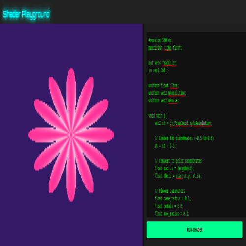
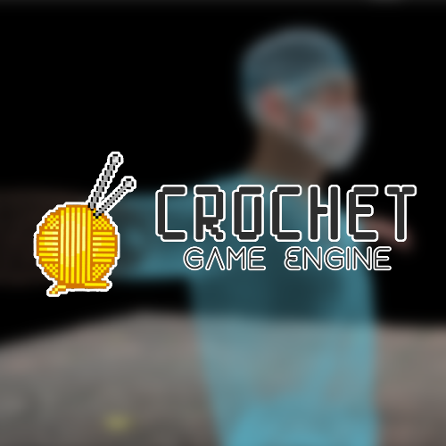
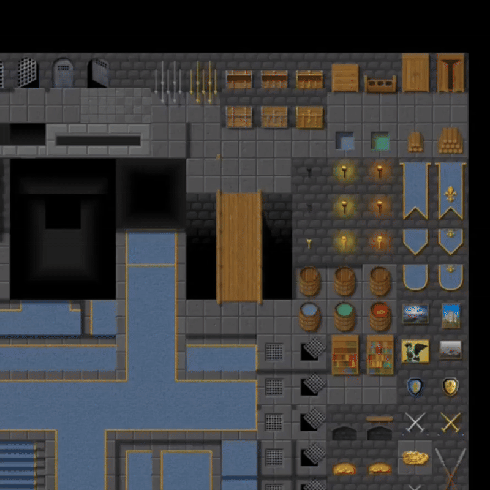
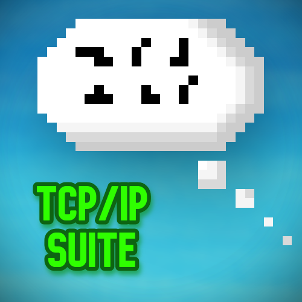

PROJECTS
Here you’ll find the projects I’ve worked on — from small experiments to full-fledged systems. Each project has its own page where I dive deeper into the design choices, challenges, and solutions. You can also explore the source code on my GitHub.
Legal: Code in this website or in my GitHub account that implements an algorithm or shows a technique or art is under the MIT lisence. And is copyrighted.

TinyRaster
17th Dec, 2025 - Present
TinyRaster is a custom software rasterizer, made from scratch using C++

Virtual Draping Simulation
12th Nov, 2025
A virtual-draping simulation. Features a simple draping of a cape to a skinned character model, the character movements affect the cloth.

Rigid Body Simulation Using Nvidia PhysX
9th Nov, 2025
A rigid-body simulation created using Nvidia PhysX. Spawns a stack of 100 cubes and the user can shoot spheres and see rigid-body simulations in real-time.

Spring-Mass Model Based Cloth Solver(Simulation)
10th Nov, 2025
A custom spring-mass model based cloth solver. This simulates a pinned cloth and its interactions with other rigid-bodies.
Shader Playground
9th Aug, 2025
A web-based tool to experiment with GLSL fragment shaders in real-time, built using WebGL and JavaScript.
Newton2D
27th Aug, 2025 - Present
Newton2D is a lightweight 2D physics library designed for game developers and engine creators. It allows real-time simulations of rigid bodies with collision detection, gravity, and constraints. Built with performance in mind, it can be easily integrated into existing engines or projects, making it ideal for prototyping and interactive applications.
Crochet Engine
Jun, 2025 - Present
Developing a custom game engine made from scratch in OpenGL and C++, designed to render 2D and 3D graphics. Features include real-time lighting, model loading, and GPU-accelerated skeletal animations. Focused on building a modular architecture with optimized rendering pipelines and resource management.
TEd: Tile Editor
Jun, 2025 - Present
Developing a visual 2D tile editor that enables game map creation using a texture atlas. Includes export functionality for seamless integration into external projects, providing a complete 2D map pipeline.
NetLink: TCP/IP Suite
30th May, 2024
A server–client based chat application with additional features including nmap scans and a rock–paper–scissors game, implemented using socket programming in C. Developed as part of ICS coursework @ IIT Jodhpur.

CVZ: Cubes v/s Zombies
25th May, 2024
A top-down zombie survival game, packed with smart enemy-AI, shooting mechanics/screen shake, unlockable areas and loot drops. Can you survive an increasingly difficult waves of zombies in cubeland?